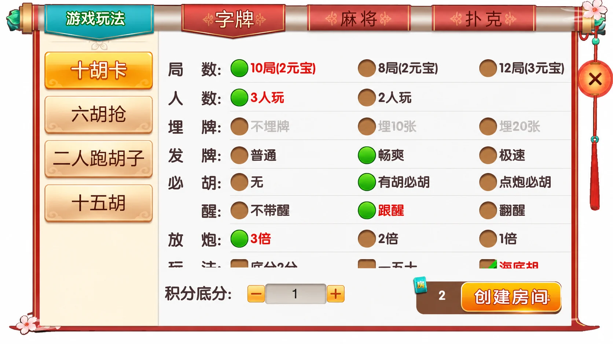
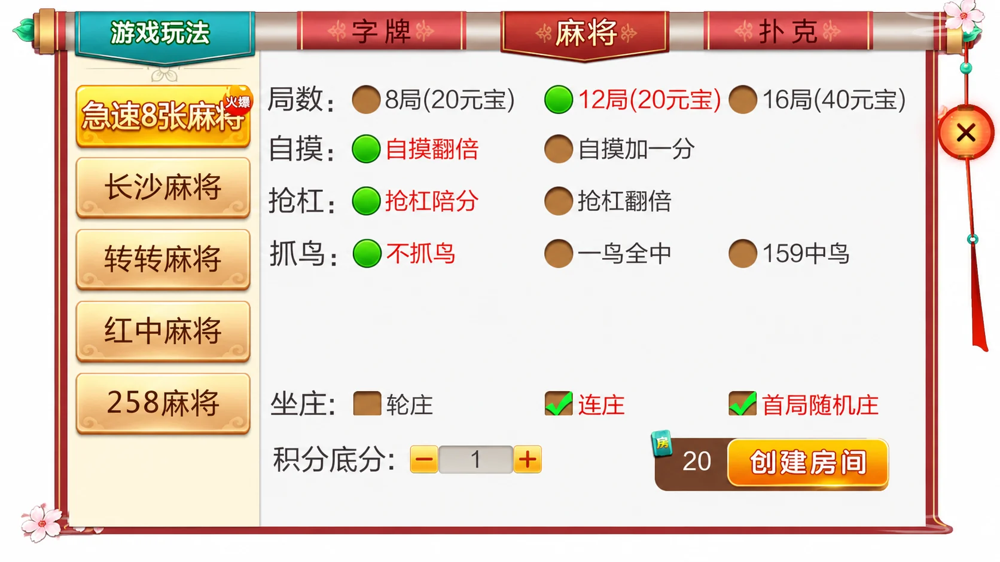

七星系列 · 地区界面与技术笔记
七星衡阳：字牌字段状态与表单可用性
从十胡卡的灰色选项和固定底栏，讨论字段提交与长表单布局。
衡阳的字牌与麻将入口
衡阳版本公开名单中的麻将有急速8张麻将、长沙麻将、转转麻将、红中麻将和258麻将；字牌有十胡卡、六胡枪、二人跑胡子和十五胡；扑克有11张跑得快、欢乐斗地主、跑得快和三打哈。
文字介绍称12个游戏，但名单合计13个名称。字牌侧栏还将“六胡枪”写成“六胡抢”。目前只记录这处名称差异，不推断它们是不同游戏或完全一致的版本。
灰色选项与固定底栏
十胡卡画面显示局数、人数、埋牌、发牌、必胡、醒和放炮选项。截图中“埋牌”一行呈灰色；单张静态图不能确认置灰原因，也不能证明切换人数就会启用它。下方另有一行内容被固定底栏遮挡，不能据此补写全部规则。
麻将面板提供另一种对照：可见自摸、抢杠、抓鸟与坐庄设置，布局空白较多。相同弹窗尺寸下，两类规则的内容密度不同，适合分别检查滚动区域、底部按钮遮挡及键盘焦点顺序。




配图为第三方界面的AI整理局部，保留可见选项和灰色状态；不代表原始像素截图或工程运行证明。元宝、积分等字段按界面原样展示，其业务机制未验证。
禁用字段如何退出提交
开发类似表单时，仅把文字变灰并不能保证旧值不被提交。可以用单独的字段模式描述当前可用项，再从草稿中提取启用字段。重新启用后的旧值是否恢复，应由产品规则明确决定。
下面的独立示例只演示提取启用字段，不推断十胡卡的埋牌规则。它保留0和false等有效值，忽略未知字段与继承属性；字段类型及玩法组合仍需另外验证。
export function activePayload(values, schema) {
return Object.fromEntries(Object.entries(schema)
.filter(([key, rule]) => rule.enabled === true
&& Object.hasOwn(values, key))
.map(([key]) => [key, values[key]]));
}
查看独立示例。10项断言覆盖禁用字段排除、空输入、0和false保留、继承属性忽略、重新启用与输入不变。示例要求调用方提供可信模式和对象，不代替服务端的权限与规则检查。
针对截图中的底部遮挡，界面实现可让规则区单独滚动，并给内容尾部预留固定按钮栏的高度。验证时应把最后一个可选项滚入视野，检查其是否能被鼠标、触屏和键盘访问，而不仅检查按钮是否显示。
尚未确认的实现
本篇未获得或运行第三方工程。未确认字段联动条件、详细胡牌公式、客户端引擎、数据库及双端构建结果。独立示例和布局建议是一般设计方法，与原工程实现没有等同关系。